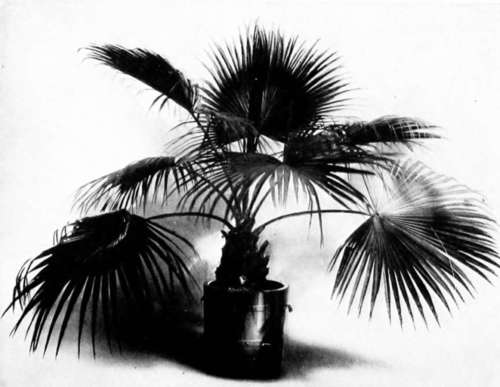
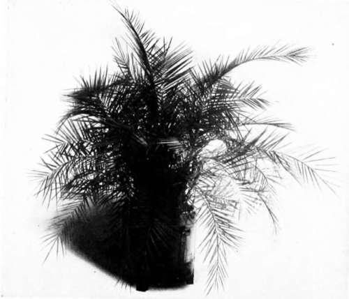

XXVI. Palm-Culture
Description
This section is from the book "Indoor Gardening", by Eben E. Rexford. Also available from Amazon: Indoor Gardening.
XXVI. Palm-Culture
EVERY woman who likes plants thinks she must try her skill at Palm-growing, because every other woman in the neighborhood is doing so. Sometimes the re-' suit is very satisfactory. Oftener, I am sorry to say, it is just the contrary.
I know of nothing less attractive than one of these plants when it becomes unhealthy. When a woman tells me that her Palm is diseased I generally advise her to throw it away and get a new one, and begin all over again. I do this because it is almost impossible to make a presentable specimen of the old one. A florist might be able to do, after a time, but life is too short for her to undertake the work of rejuvenation. The only way for the amateur to have good Palms is to obtain healthy plants and give them a treatment that will keep them healthy.
"The tips of the leaves are turning brown and drying up," one writes. " What's wrong ?"
Nine times out of ten the trouble comes from too much water at the roots. This may originate in defective drainage, or it may come from keeping the pot in a jardiniere with two or three inches of water in it. If a jardiniere is to be used, be sure to place a brick or something similar in it for the pot to stand on- something that will raise the pot above the water that runs through it. Palms are not aquatics, as some seem to think.
It may be that the leaves turn brown because of a diseased condition of the roots. Turn the ball of earth out of the pot and ascertain the condition the roots are in. If they are white their entire length, well and good. If brown at their ends you may know that there is something wrong with them. Either drainage is defective, or you have allowed the soil to become dry. The remedy, in case of defective drainage, is to make good the mistake. In the second it is to water your plant regularly. Attention to these matters when the first symptoms of trouble are seen may avert serious consequences.
Then-keeping the plant too far from the light may have something to do with it. In order to keep any plant in a healthy condition it must have plenty of light, though sunshine is not necessary to the health of such plants as the Palm. If a plant is kept for some time in a shady place it not only suffers from lack of light, but its soil becomes sour because evaporation of moisture does not take place as rapidly as it ought to. A sour soil soon brings on a diseased condition of the entire root-system. Therefore never allow your Palms to remain away from a good, strong light for more than a day or two at a time. As soon as they have done decorative duty at some social function remove them to a place where they will get the benefit of the light they need.
"I suppose my Palm needs repotting. Its roots lift the plant above the soil. How large a pot ought it to have?"
If your plant seems healthy, let it alone. Much harm is done by repotting when repotting is unnecessary. The fact that a plant is lifted above the soil by its roots does not indicate the need of more root-room. It is characteristic of the plant to grow in that way. So long as it keeps making two or three new leaves yearly, and these are as good as its earlier ones, do not think of shifting it. The fact is, the Palm does not require as large a pot as most persons think. For plants with six or seven large leaves, three or four feet tall, an eight or nine-inch pot is quite large enough. The writer has two specimens of "made-up" Palms-three plants growing together as if they were one-in nine-inch pots, and they are as healthy as Palms can well be, and are constantly developing new leaves. I feed them with frequent applications of fertilizer-either liquid, or in the shape of fine bone-meal- rather than by putting them into fresh earth every year. This does away with all disturbance of their roots and answers all purposes perfectly.
So long as any plant gets all the food it requires it is not very particular how it gets it. It is not only easier, but safer, to give it in the form of an application such as I have advised than it is to repot with the risk of injuring the roots. If repotting is done, do not attempt to remove the old soil or to loosen the roots in any way. Simply slip the plant out of its old pot, set it in the new one, and fill in about it with fresh earth, providing, of course, for good drainage. Do not attempt to crowd the fresh earth down with a stick, for by doing that you might bruise some of the tender roots on the outside of the ball of earth. Settle it compactly by watering,
FAN PALM (Laiania Borbonica).
"What soil is best for the Palm?"
Garden loam, into which some coarse sand is mixed. I would advise mixing some bone-meal with it-say a teacupful to a half bushel of soil. After three months it may be advisable to add a spoonful occasionally, working it well into the soil about the plant.
"What kind of Palm would you advise for amateur culture?"
The best kind for the amateur, all things considered, I believe to be Kentia Belmoreana. Almost as good is Kentia Fosteriana. These are of strong and dignified growth, with a wide spread of foliage, and develop into fine specimen plants, in two or three years.
If a plant of spreading habit, but comparatively low growth, is preferred, Latania Bor-bonica,-the "Fan Palm"-is an excellent variety.
Phoenix reclinata has a somewhat spreading habit, with leaves something like those of the Kentias, but its thorny characteristics make it rather unpleasant to handle.
Chameerops excelsa is a very strong and sturdy sort, with leaves shaped like those of L. Borbonica, but smaller, borne on long stalks. This is a very graceful variety, and one not commonly grown. It throws out shoots at its base, and these give plenty of foliage at a point where most Palms show simply a naked stalk. All of these can be grown satisfactorily by the amateur who will follow the directions I have given.
"Would you advise showering Palms?"
Certainly-the oftener the better.
"How long must one wait for the small plants sent out by dealers to develop into good-sized specimens ?"
All depends so much upon conditions that the question is a hard one to answer. It must be borne in mind that the Palm is a comparatively slow grower. If it makes three new leaves in a year it will be doing well. Perhaps most plants make less than that. It will be months after a new leaf shows itself in a spiky form, at the center of the plant, before it fully develops. If one is impatient of results, the best thing to do is to buy a three or four-year old plant. Of course this will cost considerably more than a young plant, but you will find the money well invested, as your plant will be enjoyable from the start, while, with a young plant, there will be lack of substance and size which will considerably detract from your enjoyment of it, unless you take pleasure in watching the process of development.
Palm (Phœnix Reclinata).
"I find little white objects on the underside of the leaves and along the stalks. These seem to do harm, as the leaf, after a little, turns yellow where they are. What are they, and how can I get rid of them ?"
These "little white objects" are scale. They can be killed by the emulsion of kerosene and soap advised in the chapter on The Insect Enemies of Plants.
Nothing will restore a leaf to its original attractiveness after its leaflets begin to turn brown at the tips, but the looks of the plant can be considerably improved by clipping off the brown part, taking pains to point each tip in a natural manner.
Continue to:
- prev: The Abutilon
- Table of Contents
- next: XXVII. Ferns